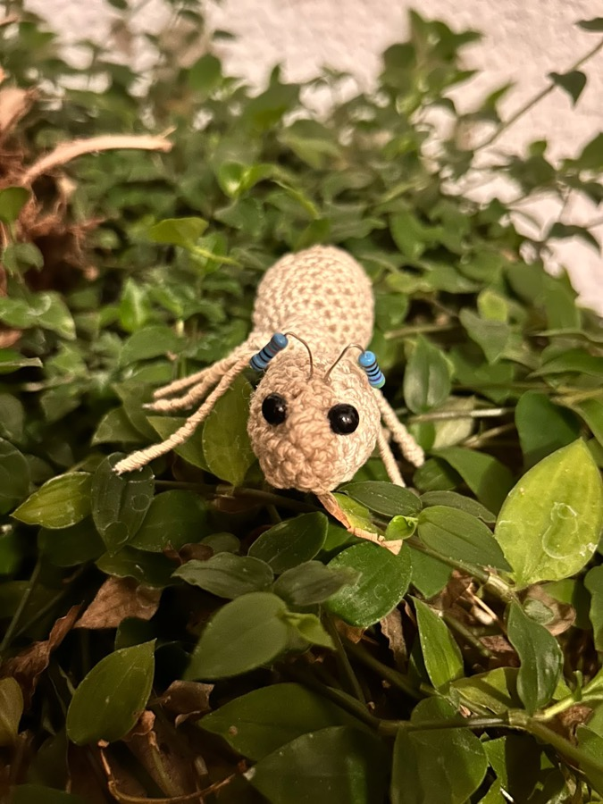
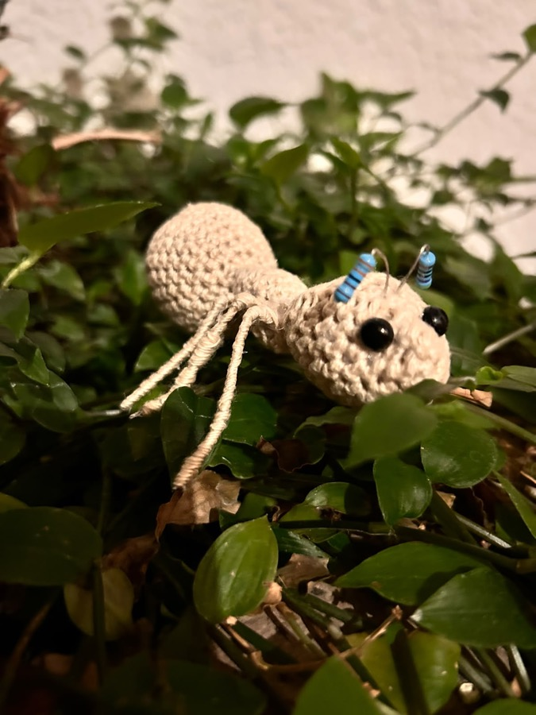

el premio. sí, sus antenas son resistencias¿Qué antena eres?
Son 12 preguntas, como 2 minutos. Te decimos qué hormiga eres y te contamos algo de ella que seguro no sabías.
Al final entras a la tómbola por la hormiga de crochet de la foto.
Tus antenas dicen que eres
Dato real

Ya estás en la tómbola.
Si te toca esta hormiga te buscamos al final.